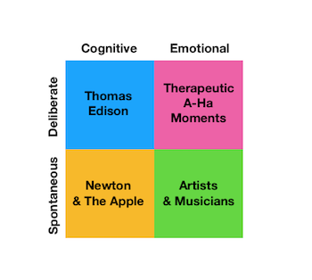

Adult Based Creative Plans
Go Back To Home Page

So, I am here to tell you about the different types of creative plans.
Now, over here , I am going to tell you about Adult Based Creative Plans.
- Deliberate and Cognitive
- Deliberate and Emotional
- Spontaneous and Cognitive
Just click on the above links to know more. !!!!
Deliberate and Cognitive
Creative types who are deliberate and cognitively-based are purposeful. They possess a lot of knowledge about a particular subject and combine that with their skills and abilities to put a plan into action. People with this type of creativity are usually adept at research, experimentation and problem-solving. This type of creativity lies in the brain's prefrontal cortex toward the front of the brain.
This quadrant is frequently represented by noted inventor Thomas Edison, who we have to thank for advances in electricity and telecommunications. Edison was noted for the amount of time he spent analyzing his experiments and persevering until he reached his goal.
Deliberate and Emotional
Creative people who are classified as deliberate and emotional, according to Dietrich, let their work be influenced by their emotions. These are frequently more sensitive and feeling individuals who might prefer lots of quiet time for personal reflection or writing in a diary. But, they are also equally logical and rational, marrying deliberate actions with emotional creativity. This type of creativity lies in the brain's amygdala, responsible for human emotion, and cingulate cortex, which combines learning and information processing.
This quadrant is indicative of those ''A-Ha!'' moments, quick bursts of sudden realization or insight into a problem or idea. An example of this might come following a personal incident like a bankruptcy, where you're reflecting on the decisions that got you to that point and using deliberate and emotional creativity to reflect and overcome your challenge.
Spontaneous and Cognitive
Remember the story of a young Isaac Newton whose ''Eureka!'' moment about the law of gravity came after being hit on the head by a falling apple? This is an example of a spontaneous and cognitive type of creative being. Spontaneous and cognitive creativity appears when individuals have the knowledge necessary to get the job done, but perhaps need inspiration to drop from the sky (a la Newton).
This type of creativity may appear at the most inconvenient time, like coming up with a unique way to finish a story while you're in the shower or envisioning a solution to a problem at work while you're driving on the weekend.
You've all done. Now, you are aware of almost all types of Adult Based Creative Plans.
Just scroll up to go back to your Home Page. !!!!!